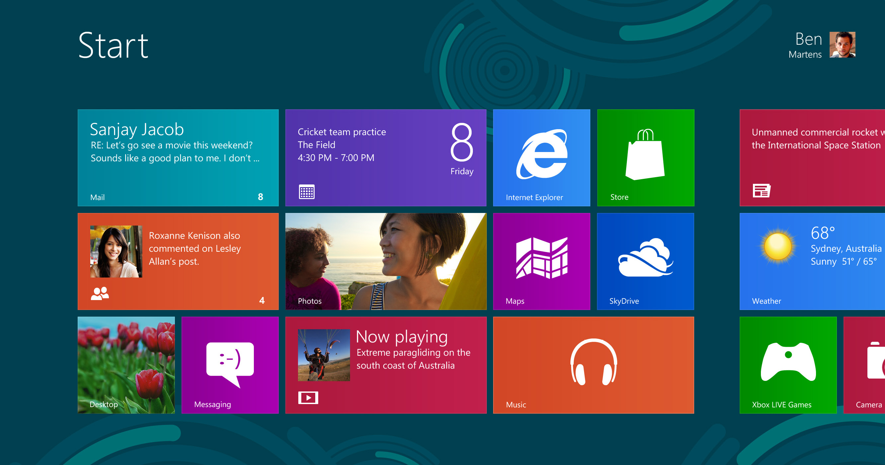

name: light layout: true class: center, middle, light --- #Gli Ambienti Grafici ##Corsi Linux 14/15 ###Fabrizio Ferrai ```html fabrizio.ferrai@gmail.com ``` ###<img src="img/poul.logo.png" alt="POuL Logo" style="height: 4em; margin-top: 2em;"> --- layout:false template:light ##Dove trovate queste slides: ```html http://de.ferrai.tk ``` ####<br/><br/><br/>Attenzione: ##FATE DOMANDE! --- name: sign layout: true .sign[[Fabrizio Ferrai](http://ferrai.tk)] .course-right[Corsi Linux 14/15 - [POuL](https://poul.org)] --- name:argomenti .title[ ##Argomento di oggi: ] -- .text[# Gli Ambienti Grafici <br/>su Linux] -- .text[####(Desktop Environments)] --- template:light layout:false ##...Ambienti cosa? --- template: sign layout: true --- name:windows .title[##Windows] .center[###] --- name:osx .title[##OS X] .center[###] --- name:linux .title[##Linux: ehm.] .center-rand1[###] -- .center-rand2[###] -- .center-rand3[###] -- .center-rand4[###] -- .center-rand5[###] --- name:graphicstack .title[##Lo stack grafico (semplificato. TANTO.)] .brick1[###Applications] -- .brick2[###Window Manager] -- .brick3[###Graphic Server (Xorg)] -- .brick4[###Linux Kernel (drivers)] --- name:whysomany .title[ ##Perché così tanti? ] -- .text[###- Perché si può.] -- .text[###- Perché nascono per soddisfare esigenze diverse] -- .text[###- ...e nascono in tempi diversi] --- template:light layout:false ##Orientiamoci. --- name:unity .title[##Unity] .center[###] --- name:unitydesc .title[##Unity] -- .text[###Pro:] -- .text[####Sviluppato molto attivamente (sostenuto da Canonical)] -- .text[####Look and feel molto curato ed esperienza omogenea] -- .text[####Maturo e completo] -- .text[###Contro:] -- .text[####Poco personalizzabile] -- .text[####Pesante] --- name:kde4 .title[##KDE] .center[###] --- name:kde .title[##KDE 4] -- .text[###Pro:] -- .text[####Suite di applicazioni completissima] -- .text[####Probabilmente il più maturo dei Desktop Environment] -- .text[####Personalizzabile fino all'ultimo pixel] -- .text[####Comunità molto forte] -- .text[###Contro:] -- .text[####Mastodontico. (E applicazioni instabili)] -- .text[####Pesante. TANTO.] --- name:kde5 .title[##(KDE 5)] .center[###] --- name:gnome3 .title[##GNOME 3] .center[###] --- name:gnome3desc .title[##GNOME 3] -- .text[###Pro:] -- .text[####Sviluppato molto attivamente (sostenuto da Red Hat)] -- .text[####Suite di applicazioni completa ed esperienza omogenea] -- .text[####Minimale] -- .text[###Contro:] -- .text[####Troppo minimale.] -- .text[####Non molto interesse verso la community] -- .text[####Tradeoff usabilità-adattamento a nuovi formati] --- name:xfce .title[##XFCE] .center[###] --- name:xfcedesc .title[##XFCE] -- .text[###Pro:] -- .text[####Minimale] -- .text[####Totalmente compatibile con GNOME] -- .text[####Personalizzabile e usabile] -- .text[####Leggero] -- .text[###Contro:] -- .text[####Community non molto attiva] -- .text[####Limitato] --- name:lxde .title[##LXDE] .center[###] --- name:lxdedesc .title[##LXDE] -- .text[###Pro:] -- .text[####Minimale] -- .text[####Leggerissimo] -- .text[####Lo sviluppo ha subito un'accelerazione ultimamente] -- .text[###Contro:] -- .text[####Brutto.] --- name:ubunturicapitol .title[##Li troviamo tutti impacchettati con Ubuntu:] -- .text[###Ubuntu => Unity] -- .text[###Kubuntu => KDE] -- .text[###Ubuntu-gnome => GNOME3] -- .text[###Xubuntu => XFCE] -- .text[###<img src="img/lubuntu-logo.png" alt="" style="width: 5%; margin-right: 0.5em;">Lubuntu => LXDE] --- name:install .title[##Come installarli] .center[###] --- template:light layout:false ##Ma ce n'è qualcun altro degno di nota ancora... --- name:mate .title[##MATE] .center[###] --- name:matedesc .title[##MATE] -- .text[###Pro:] -- .text[####Stabile e testato] -- .text[####Molto usabile] -- .text[####Leggero] -- .text[####Suite di applicazioni completa] -- .text[###Contro:] -- .text[####Vecchio] -- .text[####Non molto supportato (solo Mint)] --- name:cinnamon .title[##Cinnamon] .center[###] --- name:cinndesc .title[##Cinnamon] -- .text[###Pro:] -- .text[####Facile da usare e configurare per le esigenze base] -- .text[####Abbastanza leggero] -- .text[####Molto diffuso] -- .text[###Contro:] -- .text[####In caso di configurazioni più complesse di quella base è molto delicato] -- .text[####Supporto non dei migliori] --- name:pantheon .title[##Pantheon] .center[###] --- name:panthdesc .title[##Pantheon] -- .text[###Pro:] -- .text[####Si, sono d'accordo, è bellissimo] -- .text[####Molto leggero] -- .text[####Minimale e poco personalizzabile] -- .text[####Molta cura per il design e l'usabilità] -- .text[###Contro:] -- .text[####Poche applicazioni integrate] -- .text[####Poco maturo e in forte sviluppo] --- name:finished template: light layout:false class: center ###<img src="img/success.jpg" alt="Success!" style="height: 12em;"> --- name:cc template: light layout:false class: center ##Grazie per l'attenzione! ###<img src="img/ccbysa.png" alt="" style="width: 30%;"> ####Queste slides sono licenziate Creative Commons<br> Attribution-ShareAlike 3.0 Unported https://www.poul.org